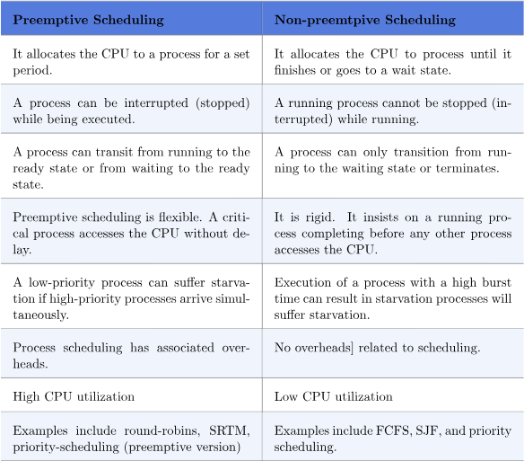

Preemptive scheduling is used when a process switches from the running state to the ready state or from the waiting state to the ready state. The resources (mainly CPU cycles) are allocated to the process for a limited amount of time and then taken away, and the process is again placed back in the ready queue if that process still has CPU burst time remaining. That process stays in the ready queue till it gets its next chance to execute.
Algorithms based on preemptive scheduling ar Round Robin(RR),Shortest Remaining Time First (SRTF),Priority (preemptive version), etc.
Preemptive scheduling has a number of advantages and disadvantages. The following are preemptive scheduling’s benefits and drawbacks:
Advantages
Disadvantages
Non-preemptive Scheduling is used when a process terminates, or a process switches from running to the waiting state. In this scheduling, once the resources (CPU cycles) are allocated to a process, the process holds the CPU till it gets terminated or reaches a waiting state. In the case of non-preemptive scheduling does not interrupt a process running CPU in the middle of the execution. Instead, it waits till the process completes its CPU burst time, and then it can allocate the CPU to another process.
Algorithms based on non-preemptive scheduling are: Shortest Job First (SJF basically non preemptive) and Priority (nonpreemptive version), etc.

Non-preemptive scheduling has both advantages and disadvantages. The following are non-preemptive scheduling’s benefits and drawbacks:
Advantages
Disadvantages
difference chart
